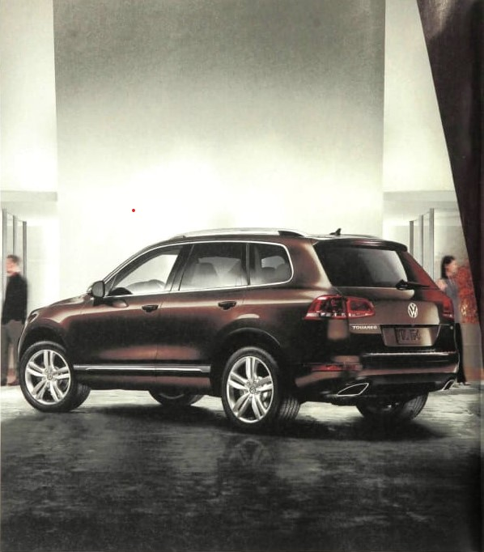

Introducing the all-new 2011 Touareg.
vw.com
It's not an SUV. It's an
SUVW.
-----------------------
----------------------------------------------------------------------------------------------------------------------------------------------------------------------------------------------------------------------------------------------------------------------------------------------------------------------------------------------------------------------------------------------------------------------------------------------------
*range based on 28 highway mpg EPA estimate for a tourag TDI clean diesel model equipped with an automatic transmission an d a 26.4-gallon fuel tank. fuel economy based on a comparison of epa highway estimates. your mileage will vary, the touareg hybrid is available in limited quantities and only though participating volkswagen dealers 2010 volkswagen of America inc
It's German engineering, to the power of three.
The all-new Touareg is available with your choice of three innovative engines: The powerful 280-hp V6. The 728-miles-to-a-tank Touareg TDI® Clean Diesel, with class-leading fuel economy*. Or, the world's first supercharged hybrid,
with an autobahn-worthy 380-hp. Inside, you'll find more substance as well. Bluetooth® technology, navigation with 3D landmarks, a rearview camera, and dozens of other features, all standard. Suffice it to, it's the most Volkswagen we've ever put into a Volkswagen.